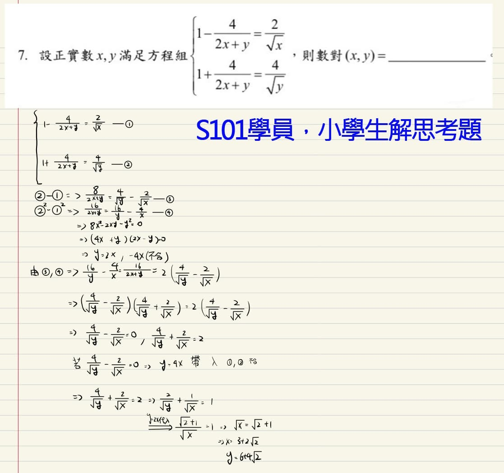
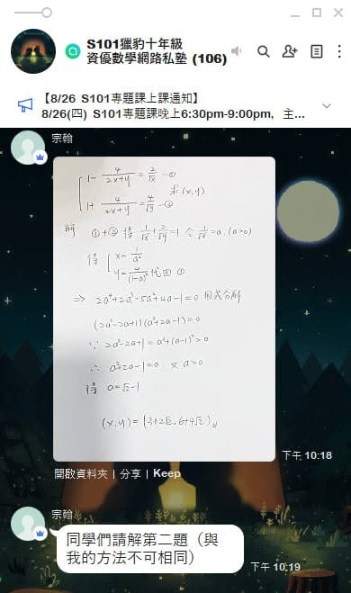
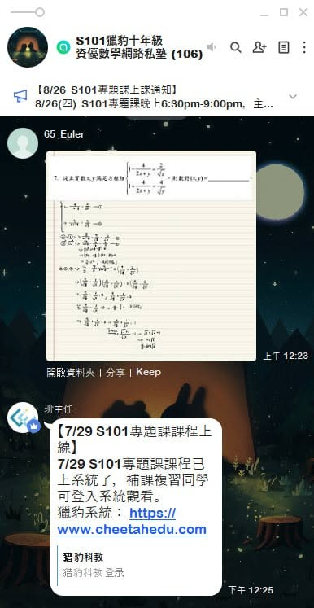

為什麼孩子拼命刷題，數學還是學不好，也失去了興趣？！
有家長詢問FS01的作業會很難嗎？
獵豹的數學課，PK小學中年級資優課程，還有依課綱進行的J71A國七和S101高一系統性課程，除了正常、適當份量的習作外，有別於一般最大的不同是安排了很少量額外燒腦的思考題！
#獵豹幾個班群常常可見同學們苦思很久的作法或討論，這對增進孩子的程度有非常大的助益！
宗翰老師常說：
一晚做50道簡單題，不如好好想2道挑戰題！（所有數學高手的養成方式！）
因此不提供一般常態性作業，每次上完課只提供2-3道思考題。（聽宗翰老師說 中國大陸給訓練奧數選訓營選手的訓練量 是每天三題高質量題）
附帶一說，獵豹老師們實體和線上數學資料十分可觀，#來源遍及世界各地，（宗翰老師、獵豹老師 在競賽相關方面的藏書量 可能是獨步台灣，種類比九章還多出許多！）
孩子們不會在茫茫題海無所適從，獵豹提供最經典的題目，#最有訓練價值去思索的題目！
🎖～傳說中的猶太問題～🎖
前兩天獵豹老師的AMC網課有道題
（Fig1)
這題的圖形讓我聯想起
數學江湖中流傳已久的
所謂【棺材問題】
※附圖為目前S101高一班群


